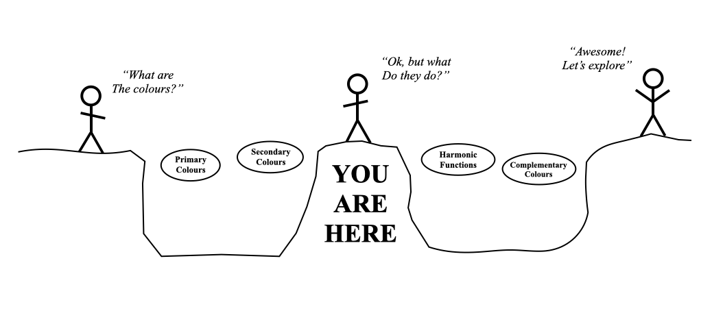

COLOURS:
congratulations!
You have completed the first two steps of the colour journey
You've earned your first metaharmony badge:
 you know what the colour wheel is
you know what the colour wheel is 
This is great time to take a break, rest and digest what we've learned
The next question is "what do the colours do?"
When you're ready, continue to harmonic functions:
Back to Secondaries | Continue to Harmonic Functions